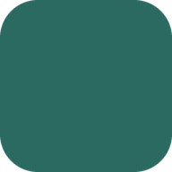

Vilken partikelmodell passar?

Fast, flytande och gas – vad gör partiklarna?
Gratis · ingen inloggning · skolappar.com
Kemi, åk 4–6, centralt innehåll: ”Materiens uppbyggnad visualiserad med hjälp av enkla partikelmodeller.”
Appen visar tre partikelmodeller som rör sig på riktigt: i fast form sitter partiklarna på fasta platser och vibrerar, i flytande form ligger de nära varandra och glider, och i gasform far de omkring och fyller hela utrymmet. Nivå 1: ett ämne visas (is, honung, ånga) och eleven väljer rätt modell. Nivå 2: modellen visas och eleven väljer vilket ämne den hör till – där finns trögflytande honung och gasol under tryck som lockbeten. Nivå 3: en modell värms eller kyls och eleven väljer modellen som blir resultatet, alltså smältning, kokning, kondensering och stelning. Poängen är att partiklarna är desamma hela tiden – det är avståndet och rörelsen som ändras. Källa: Skolverket, läroplanen för grundskolan (Lgr22), kemi åk 4–6.